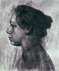

главная  персоналии
персоналии  Кэте Кольвиц
Кэте Кольвиц
главная |

Личность в историикраткая энциклопедияПроект «Личность в истории» посвящен людям — современникам грандиозных исторических событий, носителям редких качеств или людям, взгляды которых опередили их время. |
|||||||||||||||||||||||||||||||||
Коротко |
Статьи |
Персоналии |
Литература |
||||||||||||||||||||||||||||||
Кэте Кольвиц |
|||||||||||||||||||||||||||||||||
|
Я беру на себя ответственность за любую из моих работ. К. Кольвиц |
 Кэте Кольвиц. Автопортрет – |
||||||||||||||||||||||||||||||||
Биографическая справкаКольвиц, Кэте (или Кете) (Kollwitz; урожд. Шмидт; 8.7.1867–22.4.1945). Немецкая художница. Родилась в Кенигсберге, ныне Калининград. Вышла замуж за доктора Кольвица, лечившего бедняков. Занималась также графикой и скульптурой. Ее творчество носило ярко выраженный социальный характер (цикл «Война», 1922–1923). Помимо этого писала картины на исторические темы («Восстание ткачей», 1897–1898). Выступала против фашистского режима в Германии. Посетила Советский Союз. Преподавала в берлинской Академии Художеств, а с 1928 руководила там графической мастерской. В 1933 была вынуждена покинуть Академию по политическим мотивам. Умерла в 1945 г., совсем немного не дожив до победы над фашизмом. Биографическая справка
Цитаты«В искусстве Кете Кольвиц появляется и уже никогда не исчезает тема женщины. Тут сказались и влияние на художницу искусства Мунка, и чрезвычайно остро стоящий вопрос женской эмансипации. Женщина у Кете Кольвиц — активный участник происходящих событий, она — защитник детей. Женщина оплакивает мертвых и зовет в бой. Такова «черная Анна», одна из предводительниц крестьянской войны, центральная фигура листа «Взрыв» (цикл «Крестьянская война»)». (Либман Е. Кете Кольвиц. / В книге: Сто памятных дат. «??скусство Кете Кольвиц — большое и искреннее, честное искусство. Ни разу она не покривила душой, не создала ничего, от чего могла бы потом отречься». (Либман Е. Кете Кольвиц. / В книге: Сто памятных дат. «Художница, пробуя добиться наивысшего напряжения, экспрессии, работала в разных техниках: офорте, литографии и гравюре на дереве. Тема оплакивания нашла свое воплощение в традиционной немецкой технике гравюры на дереве, с ее выразительной линией и ритмом, создающими атмосферу высокого эмоционального напряжения». (Либман Е. Кете Кольвиц. / В книге: Сто памятных дат. Список литературы
|
|||||||||||||||||||||||||||||||||
|